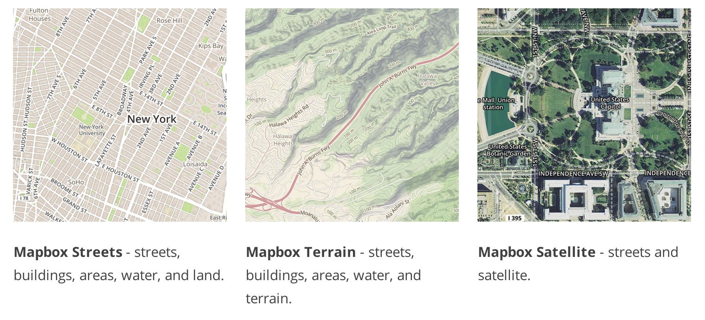
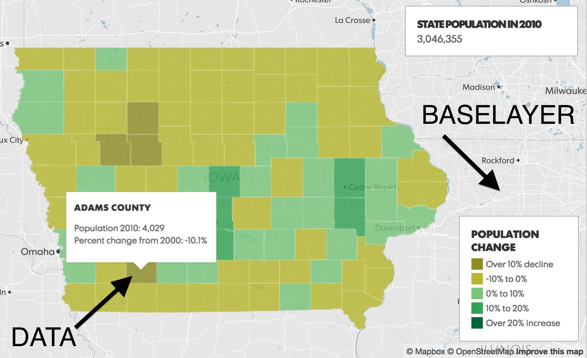
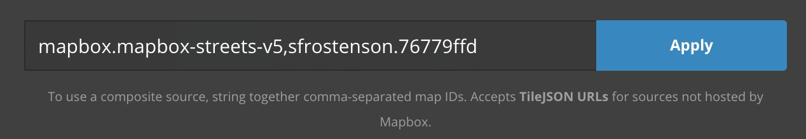

Let's Build a Map!
TileMill, Mapbox Studio & the Mapbox/Leaflet API
Sarah E. Frostenson | Gannett Digital / USATODAY
Twitter: @sfrostensonGithub: @sfrostenson
What is Mapbox?
A geographical baselayer...
What is Mapbox?
A geographical baselayer + DATA OVERLAY
Objectives
- How to build a map in Mapbox Studio or Tile Mill.
- How to build the same map using the Mapbox API.
Step One: Does Your Data Have a Geographic Field?
You need some kind of geographic field in your data to join to a shapefile or generate geojson / topojson file, etc.
- FIPS code
- Latitude / Longitude coordinates
- Or geocode your data. Checkout geomancer from the AP.
Data Formats Recognized by Mapbox Studio & Tile Mill
- csv (must contain colums w/ lat/lon coordinates)
- shapefile
- GeoJSON
- KML
- GeoTIFF
- SQLite or PostGIS
- .vrt or .gpx (Mapbox Studio only)
Our Data Story
- Unemployment rates by county for 2013
- Source: Bureau Labor of Statistics
- Found the raw data from 2000-2013 in an Excel file at the USDA.
- Yes, getting the raw data to unemployment.json takes a few steps.
- But don't worry, I've outlined exactly how to do it w/ minimal pain involved here.
Let's Get Mapping!
But First, Beware!
While TileMill still works now, know that Mapbox aims to fully replace and improve upon TileMill with Mapbox Studio.
Method I: Mapping in Mapbox Studio
Step One: Import our GeoJSON and Upload Data
- Create a new project and select Blank source.
- Click New layer and import our data.
- Change your zoom level to see our data.
- Click anywhere on the map.
- Save and name our project.
- Upload our data to Mapbox.com.
- Copy our data's Map Id.
Method I: Mapping in Mapbox Studio
Step Two: Style our data
- Select Projects and Styles (instead of Sources).
- Click on Layers and Change source to add our data's Map Id. 
- Create a style sheet for our data.
Method I: Mapping in Mapbox Studio
Step Two: Style our data
Method II: Mapping using Mapbox.js
Which method is better?
Mapbox Limitations?
Resources
Slides
Not a coder? Not a problem. There's a fully-featured visual editor for authoring these, try it out at http://slides.com.
Point of View
Press ESC to enter the slide overview.
Hold down alt and click on any element to zoom in on it using zoom.js. Alt + click anywhere to zoom back out.
Touch Optimized
Presentations look great on touch devices, like mobile phones and tablets. Simply swipe through your slides.
Fragments
Hit the next arrow...
... to step through ...
... a fragmented slide.
Fragment Styles
There's different types of fragments, like:
grow
shrink
roll-in
fade-out
current-visible
highlight-red
highlight-blue
Transition Styles
You can select from different transitions, like:
None -
Fade -
Slide -
Convex -
Concave -
Zoom
Themes
reveal.js comes with a few themes built in:
Black (default) -
White -
League -
Sky -
Beige -
Simple
Serif -
Night -
Moon -
Solarized
Slide Backgrounds
Set data-background="#dddddd" on a slide to change the background color. All CSS color formats are supported.
Image Backgrounds
<section data-background="image.png">Tiled Backgrounds
<section data-background="image.png" data-background-repeat="repeat" data-background-size="100px">Video Backgrounds
<section data-background-video="video.mp4,video.webm">Background Transitions
Different background transitions are available via the backgroundTransition option. This one's called "zoom".
Reveal.configure({ backgroundTransition: 'zoom' })Background Transitions
You can override background transitions per-slide.
<section data-background-transition="zoom">Pretty Code
function linkify( selector ) {
if( supports3DTransforms ) {
var nodes = document.querySelectorAll( selector );
for( var i = 0, len = nodes.length; i < len; i++ ) {
var node = nodes[i];
if( !node.className ) {
node.className += ' roll';
}
}
}
}
Code syntax highlighting courtesy of highlight.js.
Marvelous List
- No order here
- Or here
- Or here
- Or here
Fantastic Ordered List
- One is smaller than...
- Two is smaller than...
- Three!
Tabular Tables
| Item | Value | Quantity |
|---|---|---|
| Apples | $1 | 7 |
| Lemonade | $2 | 18 |
| Bread | $3 | 2 |
Clever Quotes
These guys come in two forms, inline:
“The nice thing about standards is that there are so many to choose from”
and block:
“For years there has been a theory that millions of monkeys typing at random on millions of typewriters would reproduce the entire works of Shakespeare. The Internet has proven this theory to be untrue.”
Intergalactic Interconnections
You can link between slides internally, like this.
Speaker View
There's a speaker view. It includes a timer, preview of the upcoming slide as well as your speaker notes.
Press the S key to try it out.
Export to PDF
Presentations can be exported to PDF, here's an example:
Global State
Set data-state="something" on a slide and "something"
will be added as a class to the document element when the slide is open. This lets you
apply broader style changes, like switching the page background.
State Events
Additionally custom events can be triggered on a per slide basis by binding to the data-state name.
Reveal.addEventListener( 'customevent', function() {
console.log( '"customevent" has fired' );
} );
Take a Moment
Press B or . on your keyboard to pause the presentation. This is helpful when you're on stage and want to take distracting slides off the screen.
Much more
- Right-to-left support
- Extensive JavaScript API
- Auto-progression
- Parallax backgrounds
- Custom keyboard bindings